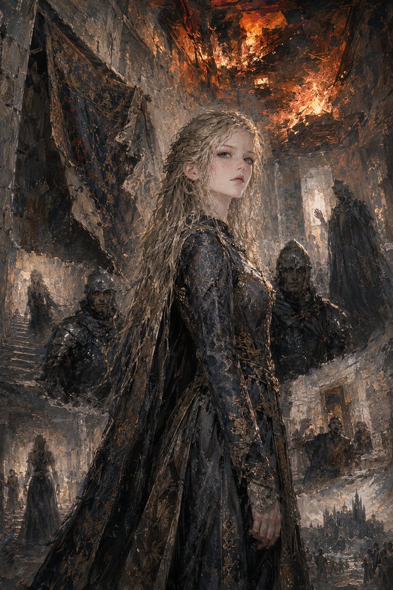

Record 2 of 15
The corridor at Vahlreth
In a burning corridor, with Reinolt at her shoulder and Adalger three steps behind, Hildegund feels the ceiling ahead go orange and the Hereditary Marker wake. It strikes through every branch that ends with her dead and leaves her one number: left.
A young woman with long wavy fair hair in a dark patterned gown stands in the foreground of a smoke-filled stone corridor looking back over her shoulder, two helmeted men in dark mail at her back, a torn black banner hanging at the upper left and the ceiling above them bursting into orange fire, a stair climbing behind her to the left, and the towers of a castle and a small crowd glimpsed at the lower right.